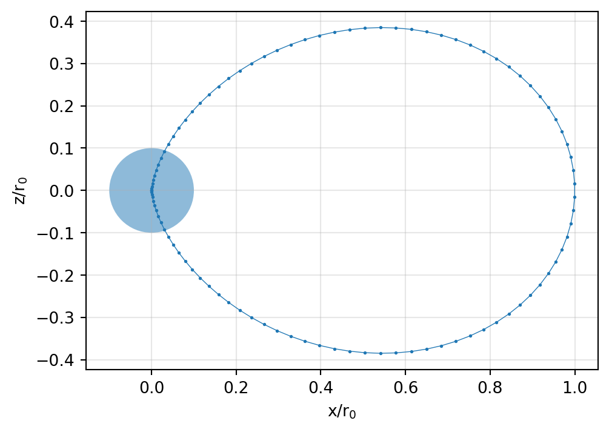
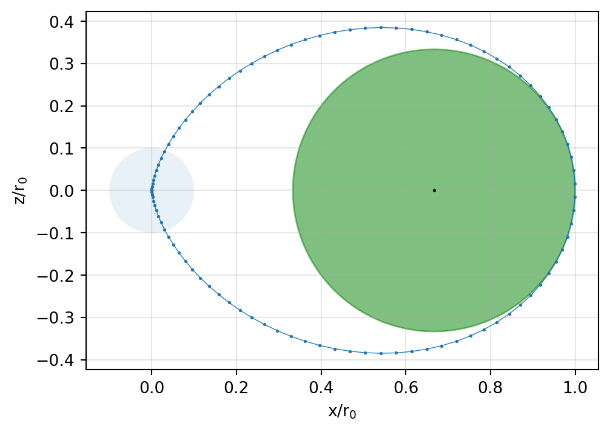
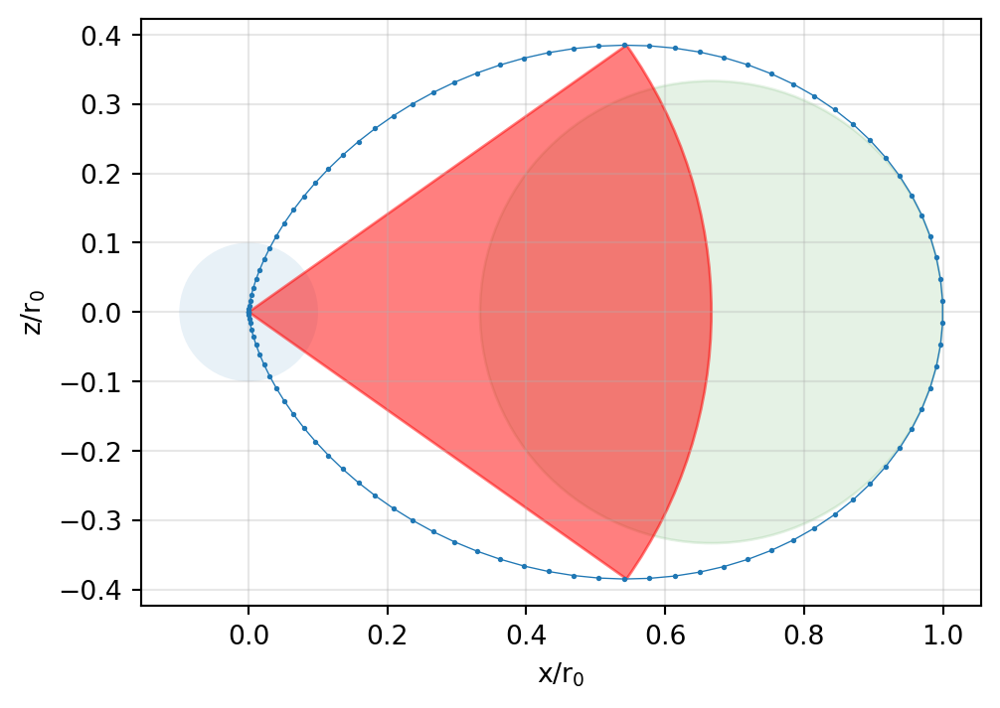

Show the code
import numpy as np
from sympy import *
import matplotlib.pyplot as plt
import matplotlib.patches as mpatches
from IPython.display import display, Mathimport numpy as np
from sympy import *
import matplotlib.pyplot as plt
import matplotlib.patches as mpatches
from IPython.display import display, MathWe try to find an equation for the field lines of a dipole.
It holds for a field line that
\[ \mathbf{H} \times \mathrm{d} \mathbf{s} = \mathbf{0} \]
which means that both the field vector and the line element are tangential at any point along the field line.
The equation for the magnetostatic field of a magnetic dipole aligned with the \(z\)-axis is given by
\[ \mathbf H(r, \theta) = \left( {H_r \atop H_\theta} \right) = \frac{m}{4 \pi r^3} \left( {{2 \cos\theta} \atop {\sin\theta} }\right). \]
In this case, the magnetic dipole moment is given by \[ \mathbf{m} = (0, 0, m)^\top, \] and the tangential line element is \[ \mathrm d \mathbf s = (\mathrm dr, r \, \mathrm d\theta, 0)^\top. \]
Let’s compute the cross product with the help of SymPy.
r, theta, d_r, d_theta, H_r, H_theta = symbols('r theta d_r d_theta H_r H_theta', real=True)
H = Matrix([H_r, H_theta, 0])
ds = Matrix([d_r, r * d_theta, 0])
display(Math('\\mathbf H \\times \\mathrm d \\mathbf s = ' + latex(H.cross(ds)) + ' = \\mathbf 0'))\(\displaystyle \mathbf H \times \mathrm d \mathbf s = \left[\begin{matrix}0\\0\\H_{r} d_{\theta} r - H_{\theta} d_{r}\end{matrix}\right] = \mathbf 0\)
We arrive at \[ H_r r \,\mathrm{d}\theta = H_\theta \,\mathrm{d} r. \] This is the differential equation of a field line. We need a parametric solution of the form \(r = r(\theta)\).
We rearrange the ODE using the definition of \(\mathbf H\) given above into the following form: \[
\frac{\mathrm{d}r}{\mathrm{d}\theta} = 2 r \cot\theta
\] To obtain a solution using SymPy, we recast r as a symbolic function (of \(\theta\)):
r = symbols("r", cls=Function)
R = dsolve(r(theta).diff(theta) - 2 * r(theta) * cot(theta), r(theta))
display(Math(latex(R)))\(\displaystyle r{\left(\theta \right)} = C_{1} \sin^{2}{\left(\theta \right)}\)
We choose \(C_1=r_0\), where \(r_0\) is an arbitrary scale length. The parametric equation for a field line of a dipole is finally given by \[ r(\theta) = r_0 \sin^2 \theta \]
We choose an arbitrary scale length \(r_0\). Since \(\theta\) is the pole distance angle, \(\sin\theta=1\) at the equator, i.e., on the plane perpendicular to the dipole. Hence, \(r_0\) can be interpreted as the distance to the field line at the equator, since \(r(\theta) = r_0\) for \(\theta=\pi/2\).
Note further, that we have to transform \(r\) and \(\theta\) into a Cartesian coordinate system using the relations \[ \begin{align} x & = r(\theta) \cos\phi \\ z & = r(\theta) \sin\phi \end{align} \] where \(\phi = \pi/2 - \theta\).
n = 100
theta_n = np.linspace(start=0, stop=np.pi, num=n)
r_0 = 1.0
x = []
z = []
for t in theta_n:
x.append(r_0 * np.sin(t)**2 * np.cos(np.pi/2 - t))
z.append(r_0 * np.sin(t)**2 * np.sin(np.pi/2 - t))fig, ax = plt.subplots(figsize=(6,4))
plt.plot(x, z, marker='.', markersize=2, linewidth=0.5)
circle = mpatches.Circle((0,0), radius=0.1, alpha=0.5, fill=True)
ax.add_patch(circle)
ax.set_xlabel(r'x/r$_0$')
ax.set_ylabel(r'z/r$_0$')
ax.grid(True, alpha=0.3)
ax.set_aspect('equal', 'box')
We observe that the shape of the field line is invariant with respect to the ratio \(r/r_0\).
In planetary geophysics, the L-shell or L-value is a particular set of magnetic field lines. The L-value describes the field lines which cross the Earth’s magnetic equator at a number of Earth radii equal to the L-value.
L-shells uniquely define regions of particular geophysical interest. For instance, auroral light displays are most common around \(L=6\), can reach \(L=4\) and even \(L=2\) during most severe geomagnetic storms.
Two questions are of particular interest:
For the curvature \(\kappa(\theta)\) of a parametric curve defined in polar coordinates \(r\) and \(\theta\) in the point \(r(\theta)\) there holds (cf. this Wikipedia article)
\[ \kappa(\theta) = \frac{r(\theta)^2 + 2 r'(\theta)^2 - r(\theta) r''(\theta)} {\left[r(\theta)^2 + r'(\theta)^2\right]^{3/2}} \]
We implement this equation to obtain the curvature radius in the equatorial plane where \(\theta=\pi/2\).
First, we introduce a symbolic function R which defines \(r(\theta) = \sin^2\theta\). Next, we implement the curvature function \(\kappa(\theta)\) using SymPy. Finally, in \(\kappa\) we substitute \(\theta\) by \(\pi/2\).
R = sin(theta)**2
kappa = (R**2 + 2 * diff(R, theta)**2 - R * diff(R, theta, theta)) / (
sqrt(R**2 + diff(R, theta)**2)**3)display(Math('\\kappa = ' + latex(kappa.subs(theta, pi/2))))\(\displaystyle \kappa = 3\)
The curvature evaluates to \(\kappa=3\).
We note that the curvature radius is the inverse of the curvature. Hence, when \(r_0 = 1\), the curvature radius at the equator is \(r_\kappa = 1/3\).
Let’s check this:
The origin of a circle with curvature radius of \(r_\kappa=1/3\) is at the point \((2/3, 0)\). We expect that the shape of this circle approximates the field line near the equatorial plane.
fig, ax = plt.subplots(figsize=(6,4))
plt.plot(x, z, marker='.', markersize=2, linewidth=0.5)
circle = mpatches.Circle((0,0), radius=0.1, alpha=0.1, fill=True)
check = mpatches.Circle((2/3,0), radius=1/3, color='green', alpha=0.5, fill=True)
plt.plot([2/3], [0], 'o', color='black', markersize=1)
ax.add_patch(circle)
ax.add_patch(check)
ax.set_xlabel(r'x/r$_0$')
ax.set_ylabel(r'z/r$_0$')
ax.grid(True, alpha=0.3)
ax.set_aspect('equal', 'box')
To find the angle where the slope of the field line is horizontal, we have to form the parametric derivative of the function in the \(x-z\)-plane.
Let \(x(\theta)\) and \(z(\theta)\) be the coordinates of the points of the curve expressed as functions of a variable \(\theta\), i.e.,
\[ z = z(\theta), \qquad x = x(\theta). \]
Then the first derivative implied by these parametric equations is easily derived using the chain rule as
\[ \frac{\mathrm{d}z}{\mathrm{d}x} = \frac{\mathrm{d}z / \mathrm{d \theta}}{\mathrm{d}x / \mathrm{d \theta}} = \frac{z'(\theta)}{x'(\theta)} \]
where the notation \(x'(\theta)\) denotes the derivative of \(x\) with respect to \(\theta\).
To find the point where the slope of the field line is horizontal, the derivative of \(z\) with respect to \(x\) must be zero (necessary condition). i.e.,
\[ \frac{z'(\theta)}{x'(\theta)} = 0. \]
We search all angles \(\theta\) for which this condition is fulfilled.
X = R * cos(pi/2 - theta)
Z = R * sin(pi/2 - theta)
theta_star = np.take(solve(Z.diff(theta) / X.diff(theta)), [1, 3])
angles = np.array([90 - p.evalf() * 180 / np.pi for p in theta_star])
angles = angles.astype('float')
print('The two angles are at ', angles, ' degrees.')The two angles are at [ 35.26438968 -35.26438968] degrees.As seen from the dipole position, the field lines are horizontal at an angle of approx. \(\pm 35\textdegree\) below and above the equatorial plane.
fig, ax = plt.subplots(figsize=(6,4))
plt.plot(x, z, marker='.', markersize=2, linewidth=0.5)
circle = mpatches.Circle((0,0), radius=0.1, alpha=0.1, fill=True)
check = mpatches.Circle((2/3,0), radius=1/3, color='green', alpha=0.1, fill=True)
check_slope = mpatches.Wedge((0,0), r=2/3, theta1=360.0+angles[1], theta2=angles[0], color='red', alpha=0.5)
ax.add_patch(circle)
ax.add_patch(check)
ax.add_patch(check_slope)
ax.set_xlabel(r'x/r$_0$')
ax.set_ylabel(r'z/r$_0$')
ax.grid(True, alpha=0.3)
ax.set_aspect('equal', 'box')
The distance from the dipole to the points where the slope is horizontal is \(r^* = r_0 \sin^2 \theta^*\).
It is always \(\frac{2}{3}r_0\).
[sin(t.evalf())**2 for t in theta_star][0.666666666666667, 0.666666666666667]